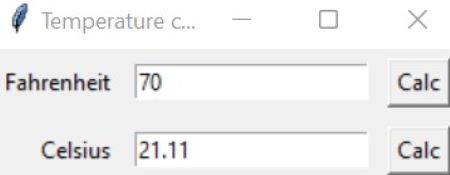

Project #1
This project is a pyhton GUI that shows the user
a box containing two textfields and buttons, once the user
enters a value into either textfield it will then convert
the text to a float data type and convert that value from
Fahrenheit to Celsius.

Project #3
This is a project that I completed at Century College,
where my team was tasked with creating a robot that could
react to it's environment. It would spin it's arms around to
rythm of a song, and LEDs on the inside would change in color and
intensity depending on the songs tempo and beat.
Project #3
This is a project that I completed at Century College,
where my team was tasked with creating a robot that could
react to it's environment. It would spin it's arms around to
rythm of a song, and LEDs on the inside would change in color and
intensity depending on the songs tempo and beat.